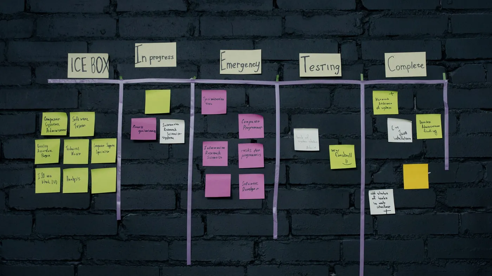

Response time is easy to measure and easy to improve. The number your customers feel is how many times they get passed along before someone fixes the problem.
Foundever published a short piece on customer effort and agentic AI with one line worth pinning to the wall: a five-minute response that leads to three transfers creates more effort than a longer interaction that solves the problem the first time.
The piece leans on ISG research. ISG found that only 20% of enterprises believe their CX meaningfully beats their competitors', and it calls the underlying problem the CX execution gap: companies understand what customers need, then fail to deliver it reliably across systems and teams. The symptoms are familiar. Customers repeat themselves across channels, get transferred between departments, and wait days for a resolution after getting an instant first reply.
The most useful detail is a client story. A financial services firm automated a process that handled 40% of its call volume and saw no drop in contacts. Customers said they were calling about their balance. What they actually wanted was to move money or make a purchase, so they called back.
Most support dashboards reward speed: first response time, average handle time, time to answer. Those numbers are easy to move with automation, which is why they are dangerous to optimise on their own. A chatbot that answers in two seconds and then hands off to a queue has improved the metric and changed nothing for the customer.
Every handoff costs you twice. The customer spends effort re-explaining, and your team spends paid time re-reading and re-verifying. Repeat contacts then land back in the same queue, so the volume you thought you automated away comes back through the front door. The financial services example is the pattern in miniature: the automation worked and the contact rate did not move.
The fix the article points at is an agent that finishes the job, or hands it over with everything the next person needs. Those are two separate capabilities, and you can build both.
The first is an agent that acts as well as answers. If the real need behind a balance question is a transfer, the agent should be able to check the balance, ask what the customer is trying to do, and start the transfer through a tool connected to your own systems. CX-Builder agents can call your APIs, read the customer's actual record, and take the action within limits you set.
The second is a handoff that carries the conversation with it. When the agent reaches the edge of what it is allowed to do, a human-in-the-loop step holds the case for a person, with the transcript, the verified details and a short summary of what has already been tried. The customer does not start again, and the person picking it up does not spend three minutes catching up.

A builder would start with an agentflow that classifies the stated reason for contact and then asks one follow-up question to find the real one, grounded by retrieval over your policies and past resolutions. Tool nodes connect the agent to the systems it needs to finish the common jobs: the account system, the order system, the ticketing tool. Conversation memory keeps the details the customer already gave, so no step asks for them twice.
At the boundary, a structured output step writes the handoff note in a fixed shape (who, what they want, what was verified, what was tried) and a human-in-the-loop node routes it to the right person. That note is the part most teams skip, and it is the part the customer notices.
Pull a week of closed tickets and count two things for each: how many times it changed hands, and whether the customer contacted you again within seven days. Rank your contact reasons by those numbers instead of by volume. The top three are where an agent that can act, and hand off cleanly when it can't, will pay for itself this quarter.